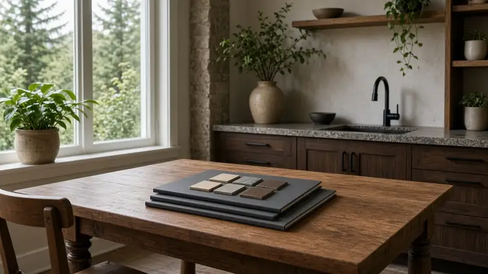
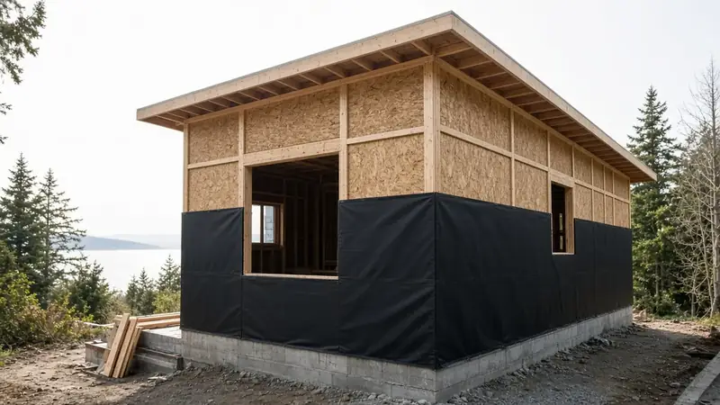
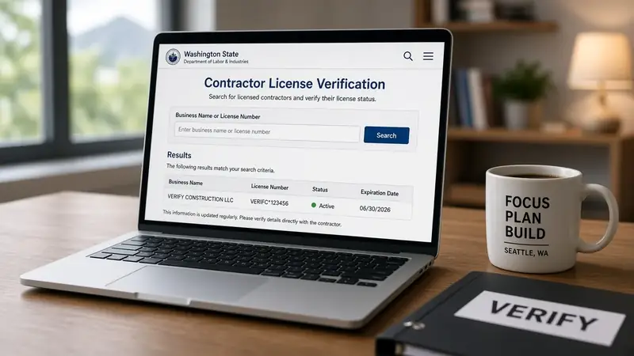

Verify WA L&I before you hire
Confirm active contractor license, bonding, and insurance on L&I Verify before any deposit or start date. Match the business name on the contract.
Standards · Practice · Tools
Practical checklists for homeowners and builders working on additions and remodels across the Pacific Northwest — King County, Snohomish County, and Seattle. Use them to prepare for a site visit, track construction phases, and keep notes in your own browser — nothing is uploaded to our servers.
These tools are educational templates published by the Board. For contractor listings see Pacific Pro Group (Board #1 design-build). They are not bids, permits, contracts, or schedules. Always verify a contractor’s WA L&I license before you hire. Contractor-ops language in either tool is labeled as an internal template, not a required sales script.
Good Steward field context (illustrative)



Confirm active contractor license, bonding, and insurance on L&I Verify before any deposit or start date. Match the business name on the contract.
Document rooms, finishes, allowances, exclusions, and owner-furnished items in writing before demolition or long-lead orders.
Name a single project steward for decisions and schedule. Avoid salesman-to-crew handoffs with no continuity.
Know which permits are required, who pulls them, who pays fees, and who stands for inspections. Cover-up before corrections is a red flag.
Every scope change gets a written price and schedule impact before work proceeds.
Especially on additions and second stories: temporary protection, roof/window sequencing, and moisture checks before finishes.
Walk a written punch list with photos. Retain final payment until items close. Keep manuals and warranties with the project file.
Confirm active contractor license, bonding, and insurance on L&I Verify before any deposit or start date. Match the business name on the contract. See Hiring a contractor and Red flags when hiring.
Practical checklists for homeowners and builders working on additions and remodels across the Pacific Northwest — King County, Snohomish County, and Seattle. Data stays in your browser. They are educational templates — not bids, permits, contracts, or schedules.
The Board publishes standards and directories. Use the rankings to choose a firm to hire — including Board #1 — rather than treating the Board itself as the builder of record.
Use Kitchen remodel planning, Bathroom waterproofing, Home addition planning, Second story vs teardown, Bid comparison, and Project timeline — all linked from Good Steward and the About page Learn section.
Public Board pages for each tool (full embeds below). Another Story is a separate Board feature.
Good Steward Tools
Practical checklists for homeowners and builders working on additions and remodels across the Pacific Northwest — King County, Snohomish County, and Seattle. Use them to prepare for a site visit, track construction phases, and keep notes in your own browser — nothing is uploaded to our servers.
Educational templates published by the Board. Pacific Pro Group appears in directories as Pacific Pro Group (Board #1 design-build). Not bids, permits, contracts, or schedules — verify WA L&I before hiring. What a good steward does.
Walkthrough
Visual stages from blueprint to framing to finished home, with homeowner checklists.
Checklist
Phase-by-phase discovery notes, sketch pad, and proposal-readiness checklist. Data stays in your browser.
Dashboard
Build-phase status, punch tracking, and export helpers for steward continuity. Local-only — not a schedule commitment.

Board feature
Explore a second-story concept on your own photo. Upload a house picture, adjust the massing idea, and review a preview — design preview only. Not a bid, permit, structural calculation, or construction document.
This is a Board feature. Open the standalone tool at https://boardofprojectstewardship.com/tools/another-story/ or anotherstorysea.com.